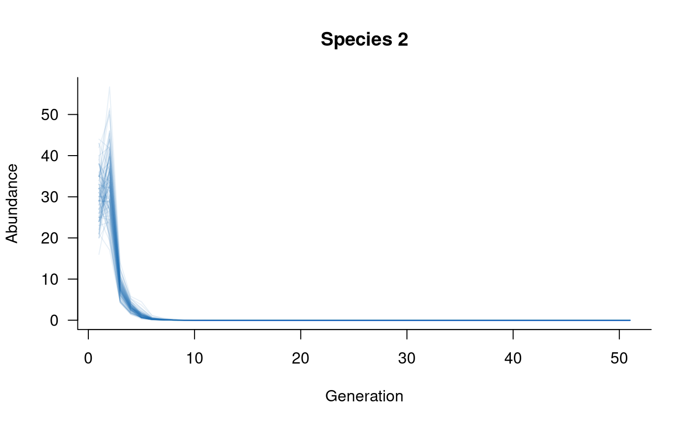

Models of interacting species
Jian Yen
07/01/2026
Source:vignettes/multiple_species.Rmd
multiple_species.RmdBackground
aae.pop has two built-in functions to define population
dynamics of multiple, interacting species:
pairwise_interaction and multispecies. These
two functions can be used to create an extended dynamics
object, from which it is possible to simulate the dynamics
of all species simultaneously. Incorporating multiple species differs
from a single-population or metapopulation model primarily because the
different species are no longer assumed to have the same matrix
structure (e.g., they can differ in number of classes). Note that this
approach could also be used for multipopulation models of a single
species if this increased flexibility is required.
It is important to keep in mind that multispecies models are difficult to parameterise due to a lack of knowledge of species interactions, especially interactions among specific age or size classes. In addition, complex multispecies models (e.g., including covariates and other demographic processes) have not been tested extensively and the functions and methods are likely to change following further testing.
Defining species interactions
The first requirement of a multispecies population model is a
definition of interactions among species. Without these interactions,
the simulated population dynamics will be identical to those simulated
with separate, single-species models. aae.pop assumes that
all interactions are pairwise, that is, species interactions do not
depend on the presence or abundance of a third species. Given the
difficulty of estimating pairwise interactions between species, it is
unlikely that models with higher-order interactions would be
reliable.
Species interactions can be defined with the
pairwise_interaction function. This function uses the
mask/function approach introduced in the Including processes vignette. The
pairwise_interaction function requires two additional
arguments: the population dynamics object for the
target population (species) and that of the source
population (species). Here, target refers to the species whose
vital rates are influenced by the abundances of the source
species.
Building the simple model introduced in the Getting started vignette, consider a three species system with the following population matrices:
# define population matrices for three species
sp1_mat <- rbind(
c(0, 0, 2, 4, 7), # reproduction from 3-5 year olds
c(0.25, 0, 0, 0, 0), # survival from age 1 to 2
c(0, 0.45, 0, 0, 0), # survival from age 2 to 3
c(0, 0, 0.70, 0, 0), # survival from age 3 to 4
c(0, 0, 0, 0.85, 0) # survival from age 4 to 5
)
sp2_mat <- rbind(
c(0, 0, 4), # reproduction from 3 year olds
c(0.25, 0, 0), # survival from age 1 to 2
c(0, 0.45, 0) # survival from age 2 to 3
)
sp3_mat <- rbind(
c(0, 0, 2, 4, 7, 10), # reproduction from 3-6 year olds
c(0.25, 0, 0, 0, 0, 0), # survival from age 1 to 2
c(0, 0.45, 0, 0, 0, 0), # survival from age 2 to 3
c(0, 0, 0.70, 0, 0, 0), # survival from age 3 to 4
c(0, 0, 0, 0.85, 0, 0), # survival from age 4 to 5
c(0, 0, 0, 0, 0.75, 0) # survival from age 5 to 6
)We can define population dynamics objects for each species and, with these, define some interactions between species 1 and 3 and between species 2 and 3:
# define population dynamics objects for each species
sp1_dyn <- dynamics(sp1_mat)
sp2_dyn <- dynamics(sp2_mat)
sp3_dyn <- dynamics(sp3_mat)
# define multispecies interactions as masks/functions
# - species 1 influencing transition probabilities of species 3
mask_1v3 <- transition(sp3_mat)
# basic Beverton-Holt function
fun_1v3 <- function(x, n) {
# n is the population vector of the source population (sp 1)
x / (1 + x * sum(n[3:5]) / 100) # focus on adults
}
# - species 3 influencing reproduction of species 2
mask_3v2 <- reproduction(sp2_mat, dims = 3)
# basic Ricker function
fun_3v2 <- function(x, n) {
# n is the population vector of the source population (sp 3)
x * exp(1 - sum(n[1:2]) / 50) / exp(1) # focus on juveniles
}
# combine masks and functions into pairwise_interaction objects
sp_int1v3 <- pairwise_interaction(sp3_dyn, sp1_dyn, mask_1v3, fun_1v3)
sp_int3v2 <- pairwise_interaction(sp2_dyn, sp3_dyn, mask_3v2, fun_3v2)Simulating multispecies dynamics
Once pairwise interactions are defined, the multispecies
function can be used to compile a dynamics object that can be passed to
simulate. Note that this function only sees the pairwise
interaction objects, so a multispecies dynamics object will
only include those species that interact directly with another
species.
Simulation of multispecies dynamics is very similar to the single-species case. Some key exceptions are that initial conditions and covariates (if provided) must be lists, with one element for each species. A single set of initial conditions will still work if all species have the same number of classes, in which case each species is assumed to have the same initial conditions. Providing species-level arguments for other processes is not currently possible but is a focus of future development. In the simplest case, multispecies dynamics can be simulated with default initial conditions and no additional arguments:
# compile a multispecies dynamics object
multisp_dyn <- multispecies(sp_int1v3, sp_int3v2)
# simulate
sims <- simulate(multisp_dyn, nsim = 100)In this case, the simulate function returns a list with
one element for each species. These individual elements can be handled
in the same way as single-species models, but aae.pop can
also work directly with the multispecies output. For example, the
plot function for a multispecies simulation
object will plot all species in separate plots by default, and takes an
optional which argument that specifies which species to
plot:
# plot
plot(sims, which = 1, col = alpha("#2171B5", 0.4), main = "Species 1")
# plot
plot(sims, which = 2, col = alpha("#2171B5", 0.4), main = "Species 2")
# plot
plot(sims, which = 3, col = alpha("#2171B5", 0.4), main = "Species 3")